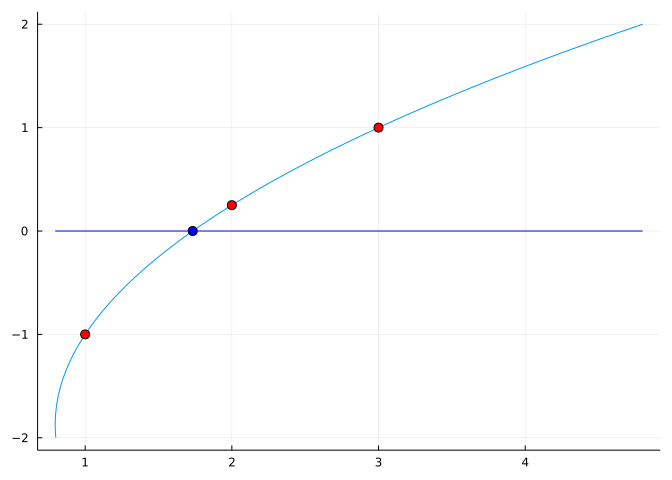
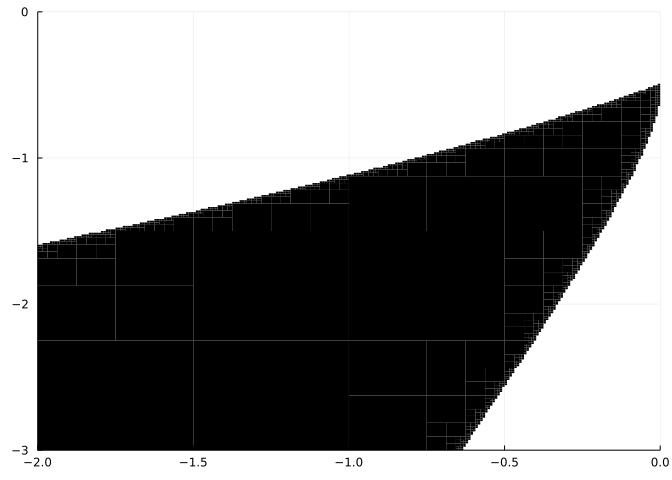

f(x) = cos(x) - x
x₀ = 1
find_zero(f, x₀)0.7390851332151607This section uses these add-on packages:
using CalculusWithJulia
using Plots
using ImplicitEquations
using Roots
using SymPyNewton’s method is not the only algorithm of its kind for identifying zeros of a function. In this section we discuss some alternatives.
find_zero(f, x0) functionThe function find_zero from the Roots packages provides several different algorithms for finding a zero of a function, including some a derivative-free algorithms for finding zeros when started with an initial guess. The default method is similar to Newton’s method in that only a good initial guess is needed. However, the algorithm, while possibly slower in terms of function evaluations and steps, is engineered to be a bit more robust to the choice of initial estimate than Newton’s method. (If it finds a bracket, it will use a bisection algorithm which is guaranteed to converge, but can be slower to do so.) Here we see how to call the function:
f(x) = cos(x) - x
x₀ = 1
find_zero(f, x₀)0.7390851332151607Compare to this related call which uses the bisection method:
find_zero(f, (0, 1)) ## [0,1] must be a bracketing interval0.7390851332151607For this example both give the same answer, but the bisection method is a bit less convenient as a bracketing interval must be pre-specified.
The default find_zero method above uses a secant-like method unless a bracketing method is found. The secant method is historic, dating back over \(3000\) years. Here we discuss the secant method in a more general framework.
One way to view Newton’s method is through the inverse of \(f\) (assuming it exists): if \(f(\alpha) = 0\) then \(\alpha = f^{-1}(0)\).
If \(f\) has a simple zero at \(\alpha\) and is locally invertible (that is some \(f^{-1}\) exists) then the update step for Newton’s method can be identified with:
That is, we can write \(g(y) = h_0 + h_1 (y-f(x_0))\). Then \(g(f(x_0)) = x_0 = h_0\), so \(h_0 = x_0\). From \(g'(f(x_0)) = 1/f'(x_0)\), we get \(h_1 = 1/f'(x_0)\). That is, \(g(y) = x_0 + (y-f(x_0))/f'(x_0)\). At \(y=0,\) we get the update step \(x_1 = g(0) = x_0 - f(x_0)/f'(x_0)\).
A similar viewpoint can be used to create derivative-free methods.
For example, the secant method can be seen as the result of fitting a degree-\(1\) polynomial approximation for \(f^{-1}\) through two points \((f(x_0),x_0)\) and \((f(x_1), x_1)\).
Again, expressing this approximation as \(g(y) = h_0 + h_1(y-f(x_1))\) leads to \(g(f(x_1)) = x_1 = h_0\). Substituting \(f(x_0)\) gives \(g(f(x_0)) = x_0 = x_1 + h_1(f(x_0)-f(x_1))\). Solving for \(h_1\) leads to \(h_1=(x_1-x_0)/(f(x_1)-f(x_0))\). Then \(x_2 = g(0) = x_1 + (x_1-x_0)/(f(x_1)-f(x_0)) \cdot f(x_1)\). This is the first step of the secant method:
\[ x_{n+1} = x_n - f(x_n) \frac{x_n - x_{n-1}}{f(x_n) - f(x_{n-1})}. \]
That is, where the next step of Newton’s method comes from the intersection of the tangent line at \(x_n\) with the \(x\)-axis, the next step of the secant method comes from the intersection of the secant line defined by \(x_n\) and \(x_{n-1}\) with the \(x\) axis. That is, the secant method simply replaces \(f'(x_n)\) with the slope of the secant line between \(x_n\) and \(x_{n-1}\).
We code the update step as λ2:
λ2(f0,f1,x0,x1) = x1 - f1 * (x1-x0) / (f1-f0)λ2 (generic function with 1 method)Then we can run a few steps to identify the zero of sine starting at \(3\) and \(4\)
x0,x1 = 4,3
f0,f1 = sin.((x0,x1))
@show x1,f1
x0,x1 = x1, λ2(f0,f1,x0,x1)
f0,f1 = f1, sin(x1)
@show x1,f1
x0,x1 = x1, λ2(f0,f1,x0,x1)
f0,f1 = f1, sin(x1)
@show x1,f1
x0,x1 = x1, λ2(f0,f1,x0,x1)
f0,f1 = f1, sin(x1)
@show x1,f1
x0,x1 = x1, λ2(f0,f1,x0,x1)
f0,f1 = f1, sin(x1)
x1,f1(x1, f1) = (3, 0.1411200080598672)
(x1, f1) = (3.157162792479947, -0.015569509788328599)
(x1, f1) = (3.14154625558915, 4.639800062679684e-5)
(x1, f1) = (3.1415926554589646, -1.8691713617942337e-9)(3.141592653589793, 1.2246467991473532e-16)Like Newton’s method, the secant method coverges quickly for this problem (though its rate is less than the quadratic rate of Newton’s method).
This method is included in Roots as Secant() (or Order1()):
find_zero(sin, (4,3), Secant())3.141592653589793Though the derivative is related to the slope of the secant line, that is in the limit. The convergence of the secant method is not as fast as Newton’s method, though at each step of the secant method, only one new function evaluation is needed, so it can be more efficient for functions that are expensive to compute or differentiate.
Let \(\epsilon_{n+1} = x_{n+1}-\alpha\), where \(\alpha\) is assumed to be the simple zero of \(f(x)\) that the secant method converges to. A calculation shows that
\[ \begin{align*} \epsilon_{n+1} &\approx \frac{x_n-x_{n-1}}{f(x_n)-f(x_{n-1})} \frac{(1/2)f''(\alpha)(e_n-e_{n-1})}{x_n-x_{n-1}} \epsilon_n \epsilon_{n-1}\\ & \approx \frac{f''(\alpha)}{2f'(\alpha)} \epsilon_n \epsilon_{n-1}\\ &= C \epsilon_n \epsilon_{n-1}. \end{align*} \]
The constant C is similar to that for Newton’s method, and reveals potential troubles for the secant method similar to those of Newton’s method: a poor initial guess (the initial error is too big), the second derivative is too large, the first derivative too flat near the answer.
Assuming the error term has the form \(\epsilon_{n+1} = A|\epsilon_n|^\phi\) and substituting into the above leads to the equation
\[ \frac{A^{1-1/\phi}}{C} = |\epsilon_n|^{1 - \phi +1/\phi}. \]
The left side being a constant suggests \(\phi\) solves: \(1 - \phi + 1/\phi = 0\) or \(\phi^2 -\phi - 1 = 0\). The solution is the golden ratio, \((1 + \sqrt{5})/2 \approx 1.618\dots\).
Steffensen’s method is a secant-like method that converges with \(|\epsilon_{n+1}| \approx C |\epsilon_n|^2\). The secant is taken between the points \((x_n,f(x_n))\) and \((x_n + f(x_n), f(x_n + f(x_n))\). Like Newton’s method this requires \(2\) function evaluations per step. Steffensen’s is implemented through Roots.Steffensen(). Steffensen’s method is more sensitive to the initial guess than other methods, so in practice must be used with care, though it is a starting point for many higher-order derivative-free methods.
Inverse quadratic interpolation fits a quadratic polynomial through three points, not just two like the Secant method. The third being \((f(x_2), x_2)\).
For example, here is the inverse quadratic function, \(g(y)\), going through three points marked with red dots. The blue dot is found from \((g(0), 0)\).

Here we use SymPy to identify the degree-\(2\) polynomial as a function of \(y\), then evaluate it at \(y=0\) to find the next step:
@syms y hs[0:2] xs[0:2] fs[0:2]
H(y) = sum(hᵢ*(y - fs[end])^i for (hᵢ,i) ∈ zip(hs, 0:2))
eqs = [H(fᵢ) ~ xᵢ for (xᵢ, fᵢ) ∈ zip(xs, fs)]
ϕ = solve(eqs, hs)
hy = subs(H(y), ϕ)sys:1: SymPyDeprecationWarning:
non-Expr objects in a Matrix is deprecated. Matrix represents
a mathematical matrix. To represent a container of non-numeric
entities, Use a list of lists, TableForm, NumPy array, or some
other data structure instead.
See https://docs.sympy.org/latest/explanation/active-deprecations.html#deprecated-non-expr-in-matrix
for details.
This has been deprecated since SymPy version 1.9. It
will be removed in a future version of SymPy.
The value of hy at \(y=0\) yields the next guess based on the past three, and is given by:
q⁻¹ = hy(y => 0)Though the above can be simplified quite a bit when computed by hand, here we simply make this a function with lambdify which we will use below.
λ3 = lambdify(q⁻¹) # fs, then xs#118 (generic function with 1 method)(SymPy’s lambdify function, by default, picks the order of its argument lexicographically, in this case they will be the f values then the x values.)
An inverse quadratic step is utilized by Brent’s method, as possible, to yield a rapidly convergent bracketing algorithm implemented as a default zero finder in many software languages. Julia’s Roots package implements the method in Roots.Brent(). An inverse cubic interpolation is utilized by Alefeld, Potra, and Shi which gives an asymptotically even more rapidly convergent algorithm then Brent’s (implemented in Roots.AlefeldPotraShi() and also Roots.A42()). This is used as a finishing step in many cases by the default hybrid Order0() method of find_zero.
In a bracketing algorithm, the next step should reduce the size of the bracket, so the next iterate should be inside the current bracket. However, quadratic convergence does not guarantee this to happen. As such, sometimes a subsitute method must be chosen.
Chandrapatla’s method, is a bracketing method utilizing an inverse quadratic step as the centerpiece. The key insight is the test to choose between this inverse quadratic step and a bisection step. This is done in the following based on values of \(\xi\) and \(\Phi\) defined within:
function chandrapatla(f, u, v, λ; verbose=false)
a,b = promote(float(u), float(v))
fa,fb = f(a),f(b)
@assert fa * fb < 0
if abs(fa) < abs(fb)
a,b,fa,fb = b,a,fb,fa
end
c, fc = a, fa
maxsteps = 100
for ns in 1:maxsteps
Δ = abs(b-a)
m, fm = (abs(fa) < abs(fb)) ? (a, fa) : (b, fb)
ϵ = eps(m)
if Δ ≤ 2ϵ
return m
end
@show m,fm
iszero(fm) && return m
ξ = (a-b)/(c-b)
Φ = (fa-fb)/(fc-fb)
if Φ^2 < ξ < 1 - (1-Φ)^2
xt = λ(fa,fc,fb, a,c,b) # inverse quadratic
else
xt = a + (b-a)/2
end
ft = f(xt)
isnan(ft) && break
if sign(fa) == sign(ft)
c,fc = a,fa
a,fa = xt,ft
else
c,b,a = b,a,xt
fc,fb,fa = fb,fa,ft
end
verbose && @show ns, a, fa
end
error("no convergence: [a,b] = $(sort([a,b]))")
endchandrapatla (generic function with 1 method)Like bisection, this method ensures that \(a\) and \(b\) is a bracket, but it moves \(a\) to the newest estimate, so does not maintain that \(a < b\) throughout.
We can see it in action on the sine function. Here we pass in \(\lambda\), but in a real implementation (as in Roots.Chandrapatla()) we would have programmed the algorithm to compute the inverse quadratic value.
chandrapatla(sin, 3, 4, λ3, verbose=true)(m, fm) = (3.0, 0.1411200080598672)
(ns, a, fa) = (1, 3.5, -0.35078322768961984)
(m, fm) = (3.0, 0.1411200080598672)
(ns, a, fa) = (2, 3.1315894157911264, 0.010003070970892524)
(m, fm) = (3.1315894157911264, 0.010003070970892524)
(ns, a, fa) = (3, 3.141678836157296, -8.618256739611538e-5)
(m, fm) = (3.141678836157296, -8.618256739611538e-5)
(ns, a, fa) = (4, 3.141592600257386, 5.3332407057633926e-8)
(m, fm) = (3.141592600257386, 5.3332407057633926e-8)
(ns, a, fa) = (5, 3.1415926535898007, -7.42705188753633e-15)
(m, fm) = (3.1415926535898007, -7.42705188753633e-15)
(ns, a, fa) = (6, 3.141592653589793, 1.2246467991473532e-16)
(m, fm) = (3.141592653589793, 1.2246467991473532e-16)
(ns, a, fa) = (7, 3.1415926535897936, -3.216245299353273e-16)3.141592653589793The condition Φ^2 < ξ < 1 - (1-Φ)^2 can be visualized. Assume a,b=0,1, fa,fb=-1/2,1, Then c < a < b, and fc has the same sign as fa, but what values of fc will satisfy the inequality?
ξ(c,fc) = (a-b)/(c-b)
Φ(c,fc) = (fa-fb)/(fc-fb)
Φl(c,fc) = Φ(c,fc)^2
Φr(c,fc) = 1 - (1-Φ(c,fc))^2
a,b = 0, 1
fa,fb = -1/2, 1
region = Lt(Φl, ξ) & Lt(ξ,Φr)
plot(region, xlims=(-2,a), ylims=(-3,0))
When (c,fc) is in the shaded area, the inverse quadratic step is chosen. We can see that fc < fa is needed.
For these values, this area is within the area where a implicit quadratic step will result in a value between a and b:
l(c,fc) = λ3(fa,fb,fc,a,b,c)
region₃ = ImplicitEquations.Lt(l,b) & ImplicitEquations.Gt(l,a)
plot(region₃, xlims=(-2,0), ylims=(-3,0))
There are values in the parameter space where this does not occur.
The chandrapatla algorithm typically waits until abs(b-a) <= 2eps(m) (where \(m\) is either \(b\) or \(a\) depending on the size of \(f(a)\) and \(f(b)\)) is satisfied. Informally this means the algorithm stops when the two bracketing values are no more than a small amount apart. What is a “small amount?”
To understand, we start with the fact that floating point numbers are an approximation to real numbers.
Floating point numbers effectively represent a number in scientific notation in terms of
The mantissa is of the form 1.xxxxx...xxx where there are \(m\) different xs each possibly a 0 or 1. The ith x indicates if the term 1/2^i should be included in the value. The mantissa is the sum of 1 plus the indicated values of 1/2^i for i in 1 to m. So the last x represents if 1/2^m should be included in the sum. As such, the mantissa represents a discrete set of values, separated by 1/2^m, as that is the smallest difference possible.
For example if m=2 then the possible value for the mantissa are 11 => 1 + 1/2 + 1/4 = 7/4, 10 => 1 + 1/2 = 6/4, 01 => 1 + 1/4 = 5/4. and 00 => 1 = 4/4, values separated by 1/4 = 1/2^m.
For \(64\)-bit floating point numbers m=52, so the values in the mantissa differ by 1/2^52 = 2.220446049250313e-16. This is the value of eps().
However, this “gap” between numbers is for values when the exponent is 0. That is the numbers in [1,2). For values in [2,4) the gap is twice, between [1/2,1) the gap is half. That is the gap depends on the size of the number. The gap between x and its next largest floating point number is given by eps(x) and that always satisfies eps(x) <= eps() * abs(x).
One way to think about this is the difference between x and the next largest floating point values is basically x*(1+eps()) - x or x*eps().
For the specific example, abs(b-a) <= 2eps(m) means that the gap between a and b is essentially 2 floating point values from the \(x\) value with the smallest \(f(x)\) value.
For bracketing methods that is about as good as you can get. However, once floating values are understood, the absolute best you can get for a bracketing interval would be
f(c) is found which is exactly 0.0f changes sign between the two values.There can be problems when the stopping criteria is abs(b-a) <= 2eps(m)) and the answer is 0.0 that require engineering around. For example, the algorithm above for the function f(x) = -40*x*exp(-x) does not converge when started with [-9,1], even though 0.0 is an obvious zero.
fu(x) = -40*x*exp(-x)
chandrapatla(fu, -9, 1, λ3)(m, fm) = (1.0, -14.715177646857693)
(m, fm) = (1.0, -14.715177646857693)
(m, fm) = (1.0, -14.715177646857693)
(m, fm) = (-0.25, 12.840254166877415)
(m, fm) = (0.375, -10.309339181864583)
(m, fm) = (0.0625, -2.3485326570336893)
(m, fm) = (-0.010153633209987412, 0.41029018616686774)
(m, fm) = (0.00020479607707152292, -0.008190165597310655)
(m, fm) = (-2.0313182169488797e-7, 8.125274518297165e-6)
(m, fm) = (6.287189464795201e-13, -2.5148757859164994e-11)
(m, fm) = (-5.293955920339377e-23, 2.117582368135751e-21)
(m, fm) = (1.0097419586828951e-28, -4.0389678347315804e-27)
(m, fm) = (-5.877471754111438e-39, 2.350988701644575e-37)
(m, fm) = (1.1210387714598537e-44, -4.484155085839415e-43)
(m, fm) = (-6.525304467998525e-55, 2.61012178719941e-53)
(m, fm) = (1.2446030555722283e-60, -4.978412222288913e-59)
(m, fm) = (-7.24454326306137e-71, 2.897817305224548e-69)
(m, fm) = (1.3817869688151111e-76, -5.527147875260445e-75)
(m, fm) = (-8.043058733543795e-87, 3.217223493417518e-85)
(m, fm) = (1.5340917079055395e-92, -6.136366831622158e-91)
(m, fm) = (-8.929588994392773e-103, 3.5718355977571093e-101)
(m, fm) = (1.7031839360032603e-108, -6.812735744013041e-107)
(m, fm) = (-9.913835302014255e-119, 3.965534120805702e-117)
(m, fm) = (1.8909140209225187e-124, -7.563656083690075e-123)LoadError: no convergence: [a,b] = [-9.913835302014255e-119, 1.8909140209225187e-124]Here the issue is abs(b-a) is tiny (of the order 1e-119) but eps(m) is even smaller.
For non-bracketing methods, like Newton’s method or the secant method, different criteria are useful. There may not be a bracketing interval for f (for example f(x) = (x-1)^2) so the second criteria above might need to be restated in terms of the last two iterates, \(x_n\) and \(x_{n-1}\). Calling this difference \(\Delta = |x_n - x_{n-1}|\), we might stop if \(\Delta\) is small enough. As there are scenarios where this can happen, but the function is not at a zero, a check on the size of \(f\) is needed.
However, there may be no floating point value where \(f\) is exactly 0.0 so checking the size of f(x_n) requires some agreement.
First if f(x_n) is 0.0 then it makes sense to call x_n an exact zero of \(f\), even though this may hold even if x_n, a floating point value, is not mathematically an exact zero of \(f\). (Consider f(x) = x^2 - 2x + 1. Mathematically, this is identical to g(x) = (x-1)^2, but f(1 + eps()) is zero, while g(1+eps()) is 4.930380657631324e-32.
However, there may never be a value with f(x_n) exactly 0.0. (The value of sin(pi) is not zero, for example, as pi is an approximation to \(\pi\), as well the sin of values adjacent to float(pi) do not produce 0.0 exactly.)
Suppose x_n is the closest floating number to \(\alpha\), the zero. Then the relative rounding error, \((\) x_n \(- \alpha)/\alpha\), will be a value \((1 + \delta)\) with \(\delta\) less than eps().
How far then can f(x_n) be from \(0 = f(\alpha)\)?
\[ f(x_n) = f(x_n - \alpha + \alpha) = f(\alpha + \alpha \cdot \delta) = f(\alpha \cdot (1 + \delta)), \]
Assuming \(f\) has a derivative, the linear approximation gives:
\[ f(x_n) \approx f(\alpha) + f'(\alpha) \cdot (\alpha\delta) = f'(\alpha) \cdot \alpha \delta \]
So we should consider f(x_n) an approximate zero when it is on the scale of \(f'(\alpha) \cdot \alpha \delta\).
That \(\alpha\) factor means we consider a relative tolerance for f. Also important – when x_n is close to 0, is the need for an absolute tolerance, one not dependent on the size of x. So a good condition to check if f(x_n) is small is
abs(f(x_n)) <= abs(x_n) * rtol + atol, or abs(f(x_n)) <= max(abs(x_n) * rtol, atol)
where the relative tolerance, rtol, would absorb an estimate for \(f'(\alpha)\).
Now, in Newton’s method the update step is \(f(x_n)/f'(x_n)\). Naturally when \(f(x_n)\) is close to \(0\), the update step is small and \(\Delta\) will be close to \(0\). However, should \(f'(x_n)\) be large, then \(\Delta\) can also be small and the algorithm will possibly stop, as \(x_{n+1} \approx x_n\) – but not necessarily \(x_{n+1} \approx \alpha\). So termination on \(\Delta\) alone can be off. Checking if \(f(x_{n+1})\) is an approximate zero is also useful to include in a stopping criteria.
One thing to keep in mind is that the right-hand side of the rule abs(f(x_n)) <= abs(x_n) * rtol + atol, as a function of x_n, goes to Inf as x_n increases. So if f has 0 as an asymptote (like e^(-x)) for large enough x_n, the rule will be true and x_n could be counted as an approximate zero, despite it not being one.
So a modified criteria for convergence might look like:
f is an approximate zero with some tolerancesf is an approximate zero with some tolerances, but be mindful that this rule can identify mathematically erroneous answers.It is not uncommon to assign rtol to have a value like sqrt(eps()) to account for accumulated floating point errors and the factor of \(f'(\alpha)\), though in the Roots package it is set smaller by default.
Let f(x) = tanh(x) (the hyperbolic tangent) and fp(x) = sech(x)^2, its derivative.
Does Newton’s method (using Roots.Newton()) converge starting at 1.0?
Does Newton’s method (using Roots.Newton()) converge starting at 1.3?
Does the secant method (using Roots.Secant()) converge starting at 1.3? (a second starting value will automatically be chosen, if not directly passed in.)
For the function f(x) = x^5 - x - 1 both Newton’s method and the secant method will converge to the one root when started from 1.0. Using verbose=true as an argument to find_zero, (e.g., find_zero(f, x0, Roots.Secant(), verbose=true)) how many more steps does the secant method need to converge?
Do the two methods converge to the exact same value?
Let f(x) = exp(x) - x^4 and x0=8.0. How many steps (iterations) does it take for the secant method to converge using the default tolerances?
Let f(x) = exp(x) - x^4 and a starting bracket be x0 = [8.9]. Then calling find_zero(f,x0, verbose=true) will show that 49 steps are needed for exact bisection to converge. What about with the Roots.Brent() algorithm, which uses inverse quadratic steps when it can?
It takes how many steps?
The Roots.A42() method uses inverse cubic interpolation, as possible, how many steps does this method take to converge?
The large difference is due to how the tolerances are set within Roots. The `Brent method gets pretty close in a few steps, but takes a much longer time to get close enough for the default tolerances
Consider this crazy function defined by:
f(x) = cos(100*x)-4*erf(30*x-10)(The erf function is the (error function](https://en.wikipedia.org/wiki/Error_function) and is in the SpecialFunctions package loaded with CalculusWithJulia.)
Make a plot over the interval \([-3,3]\) to see why it is called “crazy”.
Does find_zero find a zero to this function starting from \(0\)?
If so, what is the value?
If not, what is the reason?
Does find_zero find a zero to this function starting from \(1\)?
If so, what is the value?
If not, what is the reason?